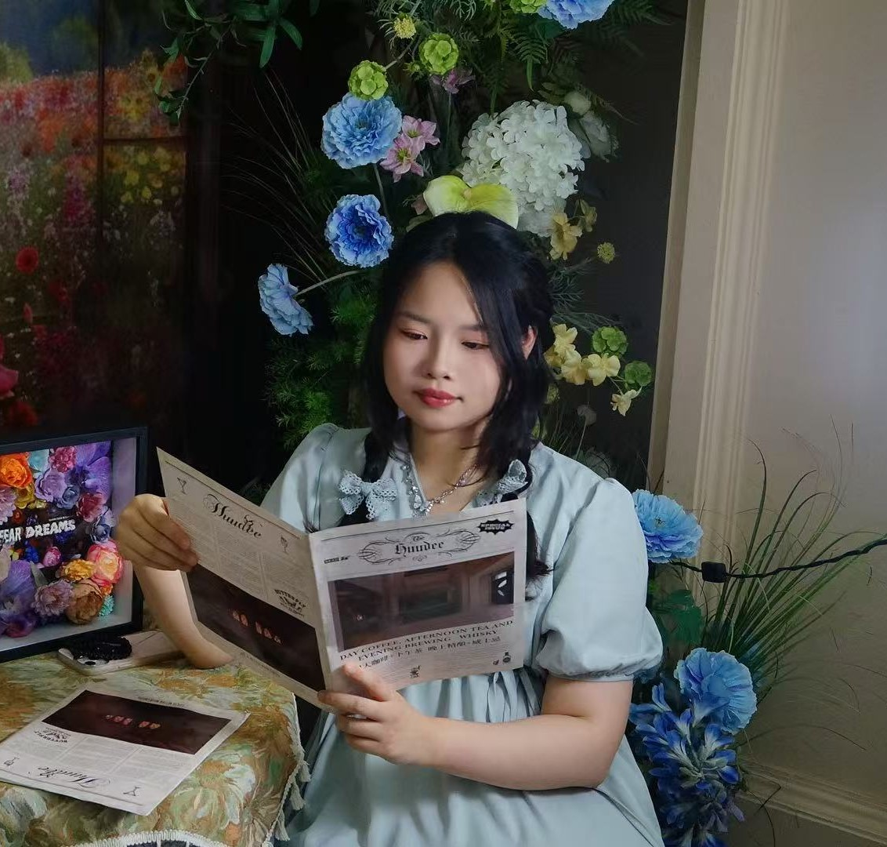

Academic Portfolio
Hi, I'm Yunxin Xu
MSc Information Student · HCI · VR/AR
I am a graduate student in the Master of Science in Information (MSI) program at the University of Michigan, pursuing the User-Centered Agile Development (UCAD) track. My interests lie in human-computer interaction for immersive systems, particularly virtual and augmented reality (VR/AR). I explore interaction techniques such as text entry, locomotion, and multimodal input, with a focus on usability, efficiency, and user-centered evaluation.
Publications
Analysis and Design of Efficient Authentication Techniques for Password Entry with the Qwerty Keyboard for VR Environments
IEEE Transactions on Visualization and Computer Graphics (TVCG), 2024
Design and Evaluation of Controller-based Raycasting Methods for Secure and Efficient Text Entry in Virtual Reality
IEEE International Symposium on Mixed and Augmented Reality (ISMAR), 2024
FootPorting: Exploring Foot-Based Teleportation Techniques for Seated Users in Confined Spaces
IEEE International Symposium on Mixed and Augmented Reality (ISMAR), 2025
Research Projects

VR Text Entry & Authentication
Designed secure and efficient text entry techniques for VR authentication with a focus on usability and performance.

VR Raycasting Interaction
Designed and evaluated controller-based raycasting techniques for text entry in virtual reality, focusing on improving speed, accuracy, and security.

Foot-based Teleportation
Explored foot-based locomotion techniques for seated users in confined environments, improving usability and interaction efficiency in immersive systems.
Course Projects
SI622: Mindo Chocolate Maker
Applied multiple usability methods, including heuristic evaluation and task-based analysis, to systematically assess an e-commerce website, identify usability issues, and propose design improvements.
SI582: DailyZen Time Management Website
Designed a Figma-based prototype for a time management website, focusing on task organization, interaction flow, and intuitive user experience for daily planning.